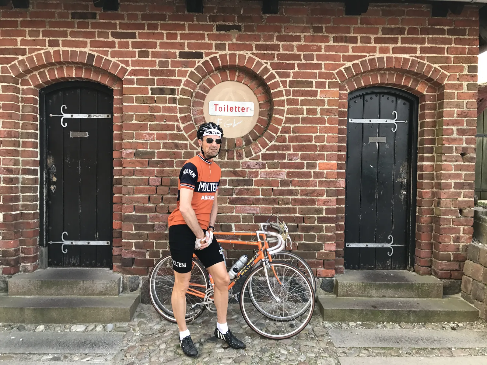
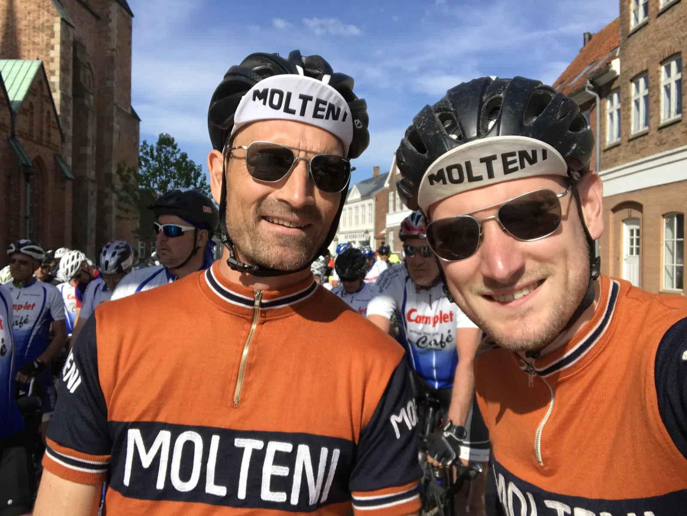

Squadra Molteni-dominans ved Vadehavsløbet

Der stod Squadra Molteni over alt på finalen ved Vadehavsløbets 76 km-distance. Kasper Sørensen blev nummer 3 og Niels Bjørnsteen nummer 8.
For at undgå det sædvanlige store presseopbud, valgte Squadra Molteni at sende Kaptajn Niels Bjørnsteen og Løjtnant Kasper Sørensen til Vadehavsløbet på en sen eftertilmelding.
Vadehavsløbet har start i mål i centrum af hyggelige Ribe. Ruten var på 76 flade kilometer – men som altid havde sidevinden en afgørende betydning.

Splittelse i sidevinden
Starten gik desværre ikke med Puch Maxi træf som sidste år, men derfor gik det alligevel over stok og sten. De første 15 kilometer blev kørt med høj fart. Det 100 mand store felt lå i læ af Vadehavsdiget – og farten lå konstant på over de 40 km/t.
Men da feltet drejede mod øst og sidevinden fik frit spil, gik der ikke længe før feltet knækkede. Niels Bjørnsteen sad helt fremme som nummer 2 – og Kasper Sørensen nåede lige med på viften på det yderste af vejkanten, da en 8-mandsgruppe kørte væk.
– Da vi havde fået hul, var alle enige, og der blev kørt et hårdt rul den næste time. Farten lå et godt stykke over 38 km./t., og jeg begyndte at håbe på en punktering, fortæller Kasper Sørensen.
Farten blev ikke sænket trods sidevinden. Et godt samarbejde i 8-mandsgruppen betød, at også de næste 20 km blev kørt uhyre hurtigt. På den første time blev kørt over 38 km.
Dobbeltsejr ved intermediate sprint
Efter godt 25 km. ved Gedstedbro rykkede både Kasper og Niels – til stor forundring for resten af førefeltet. Men ingen ud over Kasper og Niels vidste, at netop i Gedstedbro lå løbets eneste intermediate sprint.
Kaptajn Bjørnsteen vandt spurten med en cykellængde foran Kasper. 25 meter bagude sad resten af førefeltet og måbede… (efter løbet erfarede Niels og Kasper dog, at arrangørerne ikke havde indlagt bonussekunder ved Gedstedbro intermediate sprint).

Kasper i krise på sønderjysk pavé
Med godt 40 km til mål ramte førefeltet en pavé. Godt nok ikke bestående af brosten, men af småsten – som fløj om ørene på alle i feltet. Kasper havde lidt krise på de løse sten. Tabte feltet, men fik klemt sig tilbage igen.
Kort efter kom så den ene af de to bakker, der var på ruten. Her måtte Kasper slippe igen. Men endnu engang åd Kasper sig selv – og kom tilbage til feltet, hvor Bjørnsteen lod sig falde lidt tilbage for at køre Kasper det sidste stykke op.
– Så snart jeg erfarede, at Kasper havde sluppet, stoppede jeg med at tage føringer. Det gav rod i samarbejdet, og det lille felt slog lidt op i banen. Kasper havde holdt kæden stram, og kom fint tilbage, udtaler Niels Bjørnsteen.
Kaptajnens finaleudbrud
Den sidste del af løbet var præget af løbets fire stærkeste ryttere, heriblandt Niels Bjørnsteen, og (tidligere?) AOC-rytter Henrik “Valde” Nielsen, der aldrig missede en eneste føring. Kasper kæmpede med bentøjet, og sad over hver anden føring.
De sidste 10 km blev kørt lidt taktisk. Flere små ryk fra forskellige i føregruppen. Kasper og Niels kørte dog henholdende.
Ved 3.5 km til mål rykker en fyr – men han holder ikke mere en 500 meter. Da han bliver hentet, rykker Niels med alt hvad han har. Nu må det briste eller bære.
Niels holdt et hårdt tryk på i 20-30 sekunder og fik et hul på godt 100 meter. Kasper slog ud og kunne se, at der ikke var enighed i feltet om, hvem der skulle køre Niels ind.
I udkanten af Ribe rammer Niels to rundkørsler, der bliver forceret i høj fart og på dramatisk vis. Men med ca. 1 km til mål kunne Niels mærke, at mælkesyren og to begyndende kramper kom snigende. Han holdte dog hårdt pres på som muligt – uden at gå helt ned.
To ryttere fra samme hold tog ansvaret for at køre Niels ind.
Kaspers podieplads
Med godt 300 til mål, på de brostensbelagte gader i centrum af Ribe, bliver Niels kørt ind. Heldigvis ligger Kasper på hjul de to forreste ryttere – og selvom Kasper er ved at køre ind i Ribe Domkirke, formår han at holde sin placering – og bliver en flot nummer 3. Niels kom ind som nummer 8 – 3 sekunder efter.
– Niels lavede det perfekte ryk, og det havde været den perfekte sejr. Det endte desværre med at blive det perfekte lead out for mig, som jeg ikke kunne gøre noget ved. Jeg havde en lille chance i sidste sving, men der stod en domkirke i vejen, fortæller Kasper.
Og så kom verdenspressen
Mens Niels og Kasper sidder og nyder en forøvrigt glimrende forårs-ale fra Ribe Bryghus og et par lækre pølser fra Slagter Warning, får hele den synderjyske verdenspresse alligevel opsnuset, at Squadra Molteni er tilstede.
Både journalist og fotograf fra Jyske Vestkysten kan ikke få nok – så Kasper og Niels må pænt svare på spørgsmål og poserer foran kamera og øl. Da grilpølserne ikke er fra MOLTENI, når Kasper utroligt rutineret, at fjerne grilpølserne inden fotografen begynder at skyde løs.
Løbsdata
- 3. plads, Kasper Sørensen, 02:03:31, 37,1 km./t (1. plads 30 – 39 år).
- 8. plads, Niels Bjørnsteen, 02:03:34, 37,0 km./t. (3. plads 50 – 59 år).
- Alle resultater på Sporti.